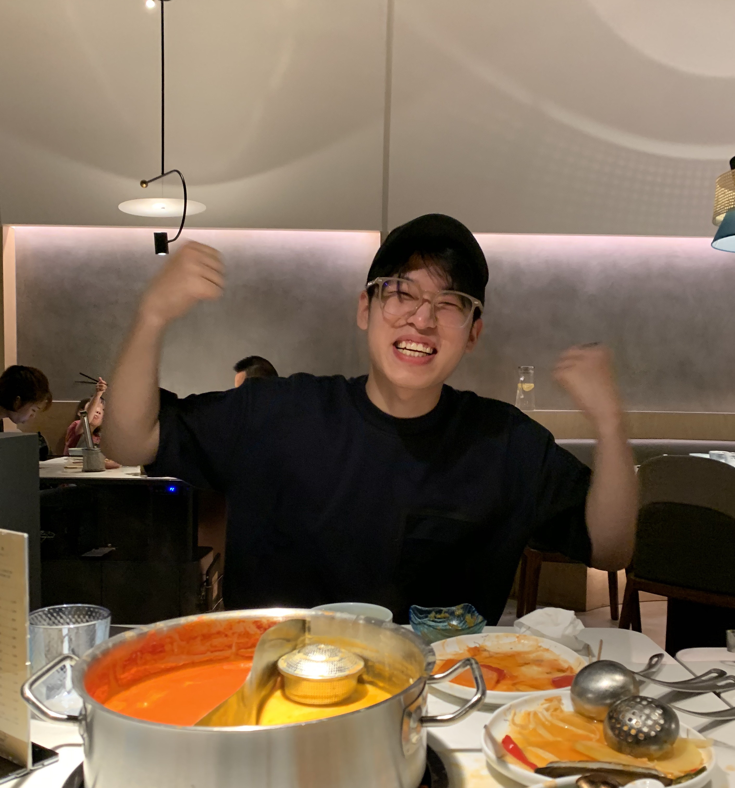

Description:
Welcome to my website! My name is Yijia Cao, and I'm a video producer, editor, and multimedia specialist with experience creating a variety of video formats. As a media student at the University of Wisconsin-Madison, I've focused on digital media and developed a strong sense of responsibility to inform and engage the public. One of my proudest achievements was participating in the editing of the Chinese version of the sixth season of Please Take Care of My Refrigerator, a popular TV variety show. Through this experience, I gained valuable skills in video editing and post-production. I'm proficient in a range of media software, including Adobe Photoshop, Audition, Dreamweaver, and Premiere Pro, as well as Davinci Resolve. I'm always eager to learn new things and stay up to date with the latest trends and techniques in the industry. As a creative professional, I'm known for my strong writing, editing, and organizational abilities. I'm comfortable conducting interviews and using search engines to gather information for projects. Above all, I bring a positive and enthusiastic attitude to every project and enjoy collaborating with others to achieve great results. If you're looking for a skilled and dedicated video producer and editor, please don't hesitate to reach out. I'd love to hear more about your project and see how I can contribute my talents and expertise to your team. Thank you for visiting my website!
Contact me to learn more!